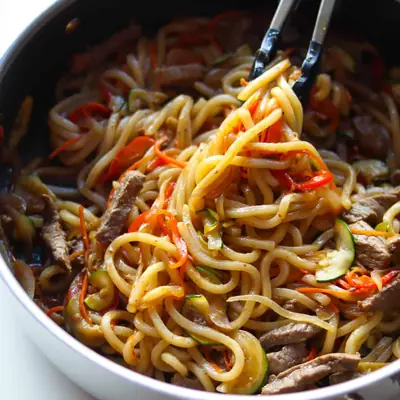

Beef Noodles Stir Fry

Ingredients
- 3 tablespoon low-sodium soy sauce
- 1 tablespoon oyster sauce (optional but adds depth)
- 1 tablespoon brown sugar or honey
- 1 tablespoon sesame oil
- 1 tablespoon rice vinegar (or apple cider vinegar)
- 2 garlic cloves, minced
- 1 teaspoon grated ginger
- 1/2 teaspoon ground black pepper
- 1 tablespoon avocado or olive oil
- 1 pound thinly sliced beef (ribeye, sirloin, or ground beef works too)
- 1 small onion, thinly sliced
- 1 red bell pepper, thinly sliced
- 1 zucchini, thinly sliced
- 1 carrot, thinly sliced
- 3 packs (about 14 oz total) pre-cooked udon noodles
- 2 green onions, chopped
- Toasted sesame seeds, for garnish
Steps
- Make the sauce - In a small bowl, whisk together soy sauce, oyster sauce, brown sugar, sesame oil, rice vinegar, garlic, ginger, and black pepper. Set aside.
- Cook the beef - Heat oil in a large skillet or wok over medium-high heat. Add beef and cook until it’s mostly browned (2–3 minutes). Drain excess fat if needed. Remove from the pan.
- Add veggies - Stir in onion, bell pepper, zucchini, and cabbage. Cook for 3–4 minutes, just until veggies are tender-crisp.
- Prepare the noodles - Remove the udon noodles from the package and add them to a pot of boiling water. There’s no need to thaw if frozen. Gently stir for 1–2 minutes, just until the noodles loosen and become tender. Since they’re already precooked, be careful not to overcook them or they’ll get too soft.
- Add noodles and sauce - Add to the skillet along with the sauce. Toss well to coat everything evenly. Continue cooking for 2–3 minutes, stirring frequently, until the noodles are heated through and glossy.
- Finish - Stir in green onions, sprinkle with sesame seeds, and adjust seasoning if needed (a drizzle of soy sauce or an extra touch of sesame oil can balance the flavor).
Recipe by Min Kwon · Kidfriendly Meals, from MJ and Hungryman. Saved here for personal use; the original has the full notes, tips and photos. Open original